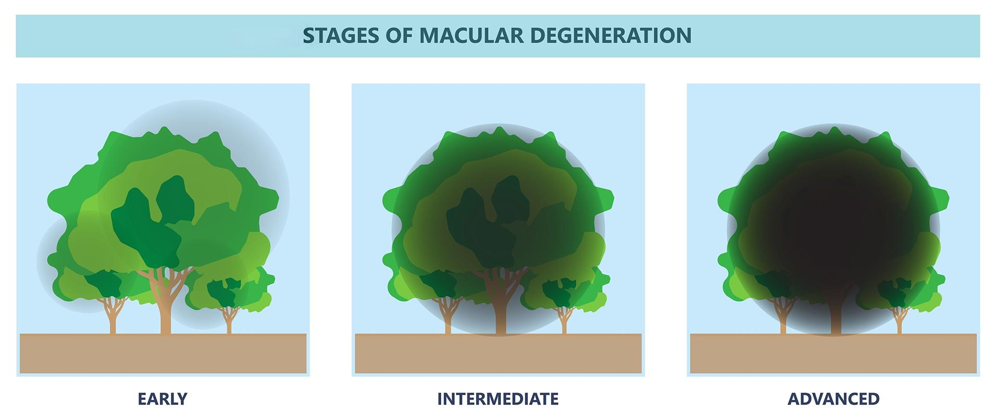

Age-related macular degeneration, or AMD, is a common eye condition that affects how well you see things straight ahead.
It happens because a part of the eye called the macula gets damaged. The macula is a small area in the center of the retina, which is at the back of your eye. The retina helps you see by sending light signals to your brain.
When the macula gets damaged, it can make your central vision blurry or dark. This can affect many activities like reading, recognizing faces, watching TV, and driving.
There are 2 main types of age-related macular degeneration: dry and wet.
Dry: This is the most common type of AMD. It happens when the macula slowly deteriorates over time. Small, yellow-white deposits called drusen develop beneath the retina. Drusen can make your central vision blurry.
Wet: Wet AMD is less common but more serious. It happens when new blood vessels grow beneath the retina. The new vessels can leak blood or fluid and lead to scar tissue formation. This damages the macula. It can lead to rapid loss of central vision. Symptoms often worsen suddenly with wet AMD, and it must be treated promptly.
Your care team can help figure out which type you have and discuss the best treatment options for you. Both types can lead to trouble reading, recognizing faces, and seeing fine details. Early detection and treatment can help protect your vision and slow the progression of the disease.

AMD mostly happens as people get older. Several factors can make it more likely:
Being over age 60
Having a family history of AMD
Smoking cigarettes
Having poorly managed high blood pressure or heart disease
A diet low in fruits and vegetables
Spending a lot of time in the sun without eye protection may also raise your risk.
Signs that you may have AMD include:
Blurry or distorted central vision
A dark or empty spot in the center of your sight
Straight lines or edges look wavy or crooked
Colors may appear faded
Hard to read or see fine details

Your care team will do eye exams to check your vision. They might use special tests like:
Optical coherence tomography, or OCT
Fluorescein angiography, or FA
Indocyanine green angiography, or ICGA
These tests help find damage in your retina.
There is no cure for AMD, but some treatments can slow down the damage:
Vitamin and mineral supplements: Certain vitamins may help protect your eyes if you have dry AMD. Your care team will suggest which ones may work for you.
Injection therapy: For the wet form, medicines are injected into your eye to block leakage from and the growth of abnormal blood vessels.
Laser therapy: In some cases, lasers can destroy abnormal blood vessels and prevent further damage.
Low vision aids: Special glasses, magnifiers, or electronic aids may help you see better.
To help prevent or slow AMD:
Wear sunglasses that block UV rays when outside.
Eat a healthy diet with lots of fruits and vegetables.
Do not smoke.
Keep your blood pressure and heart health well managed.
Have regular eye exams, especially if you are over 50.
If AMD is caught early, treatments can help maintain your vision longer. If left untreated, AMD can get worse and cause you to lose your central vision. This can make everyday tasks like reading, driving, and recognizing faces harder.
Regular checkups and following your care team’s advice can help you keep your best vision for as long as possible.
Call your care team if:
You notice your vision getting worse.
You see new dark spots or fuzzy lines in your vision.
You have trouble doing your usual activities.
You have questions about your treatment or eye health.
Get help right away if:
You suddenly lose vision in one or both eyes.
Your vision becomes very blurry or distorted very fast.
You see flashing lights or floaters.
You have eye pain or see red in your eye.
Thank you for trusting us with your care. We are here to support you and want you to feel your best. Contact us with any questions.
IF YOU HAVE A MEDICAL EMERGENCY, CALL 911 OR GO TO THE EMERGENCY ROOM.
The information presented is intended for general information and educational purposes. It is not intended to replace the advice of your health care provider. Contact your health care provider if you believe you have a health problem.
Last updated May 2025
© 2025 Mytonomy, Inc. All rights reserved.